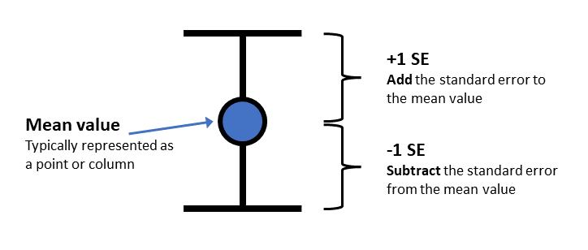
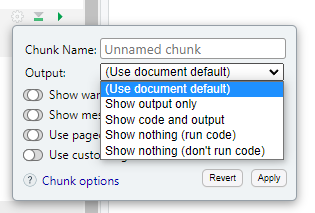

# distribution of times by condition
your_data_object %>%
ggplot() +
geom_density(aes(x = missing_column_name_A, fill = missing_column_name_B), alpha = .8) + # you need to EDIT this for Q4
theme_dark()8. Related-samples t-tests, plotting means and SE bars
Written by Tom Beesley & John Towse
Lectures
Watch Part 1
Watch Part 2
Watch Part 3
Watch Part 4
Download the lecture slides here
To play around with the t distribution simulator that Tom uses in the lecture, go here: (on campus, or VPN required)
Reading
Chapter 13 of Howell
Today we will take a look at summarising means and standard errors (SEs) from our data. We will look at how we plot these together on the one graph (using ggplot() commands that allow us to share mappings between different geoms. We will explore our data on the famous “Stroop Task” and we will use a related-samples t-test to examine the differences between the means of our different conditions in this task.
Pre-lab work: online tutorial
Online tutorial: You must make every attempt to complete this before the lab! To access the pre-lab tutorial click here (on campus, or VPN required)
Getting ready for the lab class
- Create a folder for Week 8 and download the Week_8 csv file file and upload it into this new folder in RStudio Server.
RStudio Tasks
Task 1 - Examining the distributions and filtering
The “Stroop Effect” is a classic demonstration of automaticity of behaviour. Participants have to say the colour a word is printed in, which is an easy task for a “compatible” stimulus like GREEN, and a much more difficult task for an “incompatible” stimulus like BLUE. We can’t help but read the text - it has seemingly become an automatic process.
 In this task we will calculate the means and standard errors of the means and then we will then plot them using ggplot(). First though, we’ll need to inspect the data and maybe do a bit of data wrangling by using our
In this task we will calculate the means and standard errors of the means and then we will then plot them using ggplot(). First though, we’ll need to inspect the data and maybe do a bit of data wrangling by using our filter() command.
Create a new R Markdown document. If you’re unsure about this step, see the instructions from Week 6 (or 7).
As usual, add a code chunk with
library(tidyverse)and aread_csvcommand (see above for the link to the csv). Assign the result to a new data object, and call your data something meaningful (perhaps data_w8 or data_stroop but maybe not bestest_most_fantastic_data_on_the_stroop_test_eva_init)View the data with
View(data_object_name). You will see that the data are a little different from the data we have worked with previously. We have an pID variable, which gives a unique number for each person, but each person has 3 rows of data. This is because the different conditions of the Stroop task reflect a within-subjects variable (related samples). For data like this it is often useful to have them arranged in what is referred to as “long format”, with multiple rows for each response the participant provides. For the current data that means we have a variable called condition, which is our IV, and one called time which is our DV. We also have a column labelled avg_time, which is the average of the 3 time values for each participant (the data is duplicated, which is both normal and necessary with long format data).Let’s look at the distribution of time (our DV) as a function of condition. Add another chunk of code and include the following code:
You’ll need to “map” x to time and fill to condition for our
geom_density()plot. You can play around with the alpha parameter (which sets the transparency of the elements of the graph), setting it to a value between 0 and 1. Note that this is done OUTSIDE of theaes()command.From the density plot, it does seem like we have some outlier values. It’s probably best if we remove data for the whole participant if their average time is unusual. To do that, we’ll look at the data using the avg_time column. Add the following code for a
geom_histogram()to plot the distribution of values in the new avg_time column.
# distribution of average times
your_data_object %>%
ggplot() +
geom_histogram(aes(x = missing_column_name_A), fill = "pink") + # you need to EDIT this line
theme_classic()- Let’s use the filter command we learned last week to remove these high values. Like last week, we will do this (for now) in a fairly unprincipled manner, by “eyeballing” the data (next week we’ll consider something a bit more “scientific”). Complete the filter command so that it keeps only the responses for people that had an
avg_timeless than 10 seconds. Remember that you need to think about how you are storing the result of this filter process. Do you want to create a new object, or overwrite the existing object?
# filter out the high values
new_data_object <- # create a new object (or overwrite)
your_data_object %>% # original data object
filter(insert_an_expression_here)
Check your result!
If you’ve done this correctly, you should now have a data object that has 327 rows (data for 109 participants, with 3 responses each).
- Add and edit the following code to plot a histogram of the filtered data.
# draw a histogram of the filtered data
new_data_object %>%
ggplot() +
geom_histogram(aes(x = missing_columns_name),
fill = "pink", # try some different colours?
colour = "purple", # and here?
bins = 3) # # adjust the bins?
# you could also add (+) a theme to this plot!
# for a list of themes, type: ?theme_classic- Finally, copy the code for the original
geom_density()plot that you drew in step 4. Paste it, and edit the code so that it now plots the filtered set of data (from step 7) for each of the three conditions in the stroop task.
Task 3 - Plotting the means and SEs
- In Task 2 you calculated the means for each condition in the Stroop task. We’ve seen in lectures that “standard error” provides an estimate of how variable that mean will be across the samples we collect. A very typical way to plot a mean value is to plot it with the standard error of the mean (SEM):

- The code from Task 2, Question 1 will give the mean. We will now add a second line of this code to give the standard error values:
stroop_summary <-
name_of_data_object %>%
group_by(name_of_IV_column) %>% # you need to EDIT this for Q2
summarise(stroop_mean = mean(name_of_DV_column),
stroop_SE = sd(name_of_DV_column)/sqrt(n())) # you need to EDIT this for Q1Add this code to your document and the correct column (DV) to both the
sd()and themean()commands. Note that you don’t need to put anything inn(), as this simply calculates how many rows there are.View the new summary object you have created. Check that the means and SEs are different for the 3 conditions. If they are the same, you probably summarised the wrong column!
Check your result!
- The SE values should be: 0.137, 0.136, 0.168
- We will now plot these 3 mean values in a figure. Let’s use
geom_point()so that our means and SEs look a bit like the figure above. Complete the ggplot command to plot our summarised value called stroop_mean (y), as a function of the IV, condition (x):
# let's first plot the means
name_of_data_object %>%
ggplot(aes(x = name_of_IV_column, y = name_of_DV_column)) + # map variables to x and y for Q5
geom_point(size = 5)- Now we need to add some “error bars” which provide a visual guide as to how much uncertainty we have in our mean value. Edit the code below for the
ggplot()command to plot bothgeom_point()(same as Q5) andgeom_errorbar. You will need to calculate ayminand aymaxvalue.
Plotting the error bars
Use the illustration of the error bars above to work out how to combine the mean value and the SE value (hint: you’ll need to either ADD or SUBTRACT for the two statements) to create the right ymin and ymax. You need to put this in the “missing_equation” bit of the code below:
# let's first plot the means
name_of_data_object %>%
ggplot(aes(x = name_of_IV_column, y = name_of_DV_column)) + # map variables to x and y for Q5
geom_point(size = 5) +
geom_errorbar(aes(ymin = missing_equation, # edit this for Q5
ymax = missing_equation), # edit this for Q5
width = .2)
Check your result!
- The correct result will have 3 points, and an error bar around each mean point. These 3 error bars should all be different sizes (as per the 3 SEs you calculated in steps 2-4)
EXTRA: These next steps can be completed to practice customising your plot
Add a
labs()layer to the plot to change the axis titles, and the title of the plot.Change the theme of the plot (e.g.,
theme_classic()ortheme_dark())Map the colour aesthetic to the variable condition. You can do this for
geom_pointorgeom_errorbaror both at once by putting it in theaes()within theggplot()command.Try changing your
geom_point()togeom_col.
Task 4 - Knit the document
Let’s try knitting the document. If you’ve done everything right, then the knitting process will work and you’ll get a nice output (in html, or PDF, whichever you choose). If something goes wrong, here’s a few things you can check
Did you keep all your code in the code chunks?
Check all your code blocks run.
Are there any red cross symbols next to your lines of code? These indicate a code error and need to be fixed before it will knit.
When you knit the document, you will probably see the code you have written in the output. You can decide whether you want to present the code or not using the options for each code chunk:

Click the cog, then select the type of output you want each code to produce.
Knitting the document is a great way to see how your work looks as an actual report. Go back and add more description between your code chunks to describe all the steps you have performed in your analysis.
Week 8 Quiz
You can access a set of quiz questions related to this week here.